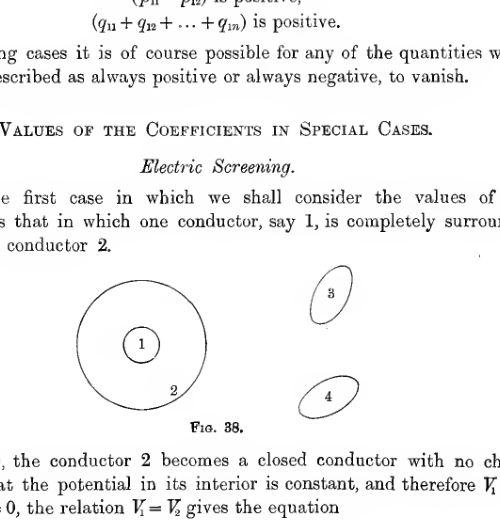
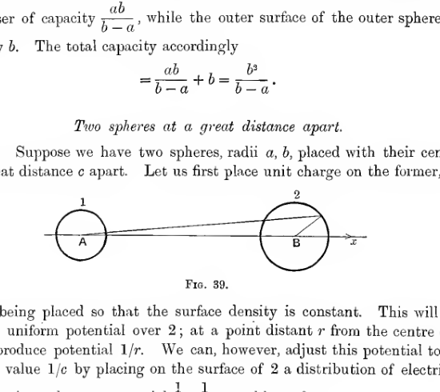
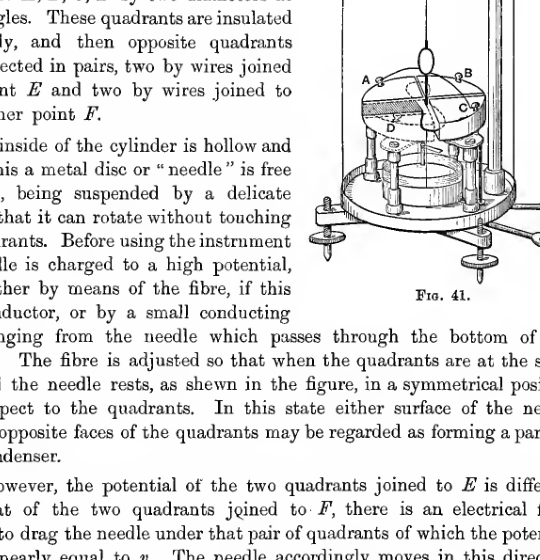
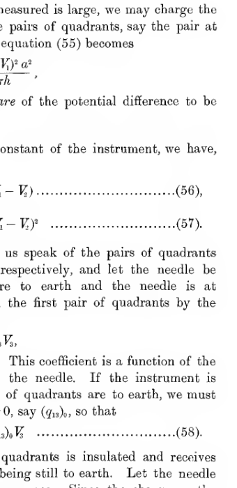

Chapter IV#
Systems of Conductors#
98. In the present Chapter we discuss the general theory of an electrostatic field in which there are any number of conductors. The charge on each conductor will of course influence the distribution of charges on the other conductors by induction, and the problem is to investigate the distributions of electricity which are to be expected after allowing for this mutual induction.
We have seen that in an electrostatic field the potential cannot be a maximum or a minimum except at points where electric charges occur. It follows that the highest potential in the field must occur on a conductor, or else at infinity, the latter case occurring only when the potential of every conductor is negative. Excluding this case for the moment, there must be one conductor of which the potential is higher than that anywhere else in the field. Since lines of force run only from higher to lower potential (\(\S 36\)), it follows that no lines of force can enter this conductor, there being no higher potential from which they can come, so that lines of force must leave it at every point of its surface. In other words, its electrification must be positive at every point.
So also, except when the potential of every conductor is positive, there must be one conductor of which the potential is lower than that anywhere else in the field, and the electrification at every point of this conductor must be negative.
If the total charge on a conductor is nil, the total strength of the tubes of force which enter it must be exactly equal to the total strength of the tubes which leave it. There must therefore be both tubes which enter and tubes which leave its surface, so that its potential must be intermediate between the highest and lowest potentials in the field. For if its potential were the highest in the field, no tubes could enter it, and vice versa. On any such conductor the regions of positive electrification are separated from regions of negative electrification by lines of no electrification, these lines being loci along which \(\sigma = 0\). In general the resultant intensity at any point of a conductor is \(4\pi\sigma\). At any point of a line of no electrification, this intensity vanishes, so that every point of a line of no electrification is also a point of equilibrium.
At a point of equilibrium we have already seen that the equipotential through the point cuts itself. A line of no electrification, however, lies entirely on a single equipotential, so that this equipotential must cut itself along the line of no electrification. Moreover, by \(\S 69\), it must cut itself at right angles, except when it consists of more than two sheets.
99. We can prove the two following propositions:
I. If the potential of every conductor in the field is given, there is only one distribution of electric charges which will produce this distribution of potential.
II. If the total charge of every conductor in the field is given, there is only one way in which these charges can distribute themselves so as to be in equilibrium.
If proposition I is not true, let us suppose that there are two different distributions of electricity which will produce the required potentials. Let \(\sigma\) denote the surface density at any point in the first distribution, and \(\sigma'\) in the second. Consider an imaginary distribution of electricity such that the surface density at any point is \(\sigma - \sigma'\). The potential of this distribution at any point \(P\) is
where the integration extends over the surfaces of all the conductors, and \(r\) is the distance from \(P\) to the element \(dS\). If \(P\) is a point on the surface of any conductor,
are by hypothesis equal, each being equal to the given potential of the conductor on which \(P\) lies. Thus
so that the supposed distribution of density \(\sigma - \sigma'\) is such that the potential vanishes over all the surfaces of the conductors. There can therefore be no lines of force, so that there can be no charges, i.e. \(\sigma - \sigma' = 0\) everywhere, so that the two distributions are the same.
And again, if proposition II is not true, let us suppose that there are two different distributions \(\sigma\) and \(\sigma'\) such that the total charge on each conductor has the assigned value. A distribution \(\sigma - \sigma'\) now gives zero as the total charge on each conductor. It follows, as in \(\S 98\), that the potential of every conductor must be intermediate between the highest and lowest potentials in the field, a conclusion which is obviously absurd, as it prevents every conductor from having either the highest or the lowest potential. It follows that the potentials of all the conductors must be equal, so that again there can be no lines of force and no charges at any point, i.e. \(\sigma - \sigma' = 0\) everywhere.
It is clear from this that the distribution of electricity in the field is fully specified when we know either
the total charge on each conductor,
the potential of each conductor.
Superposition of Effects#
100. Suppose we have two equilibrium distributions:
A distribution of which the surface density is \(\sigma\) at any point, giving total charges \(E_1, E_2, \ldots\) on the different conductors, and potentials \(V_1, V_2, \ldots\).
A distribution of surface density \(\sigma'\), giving total charges \(E_1', E_2', \ldots\) and potentials \(V_1', V_2', \ldots\).
Consider a distribution of surface density \(\sigma + \sigma'\). Clearly the total charges on the conductors will now be \(E_1 + E_1'\), \(E_2 + E_2'\), … and if \(V_P\) is the potential at any point \(P\),
where the notation is the same as before. If \(P\) is on the first conductor,
so that \(V_P = V_1 + V_1'\); and similarly when \(P\) is on any other conductor. Thus the imaginary distribution of surface density \(\sigma + \sigma'\) is an equilibrium distribution, since it makes the surface of each conductor an equipotential, and the potentials are
The total charges, as we have seen, are \(E_1 + E_1'\), \(E_2 + E_2'\), …, and from the proposition previously proved, it follows that the distribution of surface-density \(\sigma + \sigma'\) is the only distribution corresponding to these charges.
We have accordingly arrived at the following proposition:
If charges \(E_1, E_2, \ldots\) give rise to potentials \(V_1, V_2, \ldots\), and if charges \(E_1', E_2', \ldots\) give rise to potentials \(V_1', V_2', \ldots\), then charges \(E_1 + E_1'\), \(E_2 + E_2'\), … will give rise to potentials \(V_1 + V_1'\), \(V_2 + V_2'\), …
In words: if we suppose two systems of charges, the potentials produced can be obtained by adding together the potentials corresponding to the two component systems.
Clearly the proposition can be extended so as to apply to the superposition of any number of systems.
We can obviously deduce the following:
If charges \(E_1, E_2, \ldots\) give rise to potentials \(V_1, V_2, \ldots\), then charges \(K E_1, K E_2, \ldots\) give rise to potentials \(K V_1, K V_2, \ldots\).
101. Suppose now that we have \(n\) conductors fixed in position and uncharged. Let us refer to these conductors as conductor \((1)\), conductor \((2)\), etc. Suppose that the result of placing unit charge on conductor \((1)\) and leaving the others uncharged is to produce potentials \(p_{11}, p_{12}, \ldots p_{1n}\) on the \(n\) conductors respectively, then the result of placing \(E_1\) on \((1)\) and leaving the others uncharged is to produce potentials \(p_{11} E_1, p_{12} E_1, \ldots p_{1n} E_1\).
Similarly, if placing unit charge on \((2)\) and leaving the others uncharged gives potentials \(p_{21}, p_{22}, \ldots p_{2n}\), then placing \(E_2\) on \((2)\) and leaving the others uncharged gives potentials \(p_{21} E_2\), \(p_{22} E_2\), … \(p_{2n} E_2\).
In the same way we can calculate the result of placing \(E_3\) on \((3)\), \(E_4\) on \((4)\), and so on.
If we now superpose the solutions we have obtained, we find that the effect of simultaneous charges \(E_1, E_2, \ldots E_n\) is to give potentials \(V_1, V_2, \ldots V_n\), where
etc. These equations give the potentials in terms of the charges. The coefficients \(p_{11}, p_{12}, \ldots\) do not depend on either the potentials or charges, being purely geometrical quantities, which depend on the size, shape and position of the different conductors.
Green’s Reciprocation Theorem#
102. Let us suppose that charges \(e_p, e_q, \ldots\) on elements of conducting surfaces at \(P, Q, \ldots\) produce potentials \(V_P, V_Q, \ldots\) at \(P, Q, \ldots\), and that similarly charges \(e_p', e_q', \ldots\) produce potentials \(V_P', V_Q', \ldots\). Then Green’s Theorem states that
the summation extending in each case over all the charges in the field.
To prove the theorem, we need only notice that
the summation extending over all charges except \(e_p\), so that in \(\Sigma e_p' V_P\) the coefficient of \(1/PQ\) is \(e_p' e_q\) from the term \(e_p' V_P\), and \(e_p e_q'\) from the term \(e_q' V_Q\). Thus
from symmetry.
103. The following theorem follows at once:
If total charges \(E_1, E_2\) on the separate conductors of a system produce potentials \(V_1, V_2, \ldots\), and if charges \(E_1', E_2', \ldots\) produce potentials \(V_1', V_2', \ldots\), then
the summation extending in each case over all the conductors.
To see the truth of this, we need only divide up the charges \(E_1, E_2, \ldots\) into small charges \(e_p, e_q, \ldots\) on the different small elements of the surfaces of the conductors, and the proposition becomes identical with that just proved.
104. Let us now consider the special case in which
so that
and
so that
Then \(\Sigma E V' = p_{21}\) and \(\Sigma E' V = p_{12}\), so that the theorem just proved becomes
In words: the potential to which conductor \((1)\) is raised by putting unit charge on \((2)\), all the other conductors being uncharged, is equal to the potential to which \((2)\) is raised by putting unit charge on \((1)\), all the other conductors being uncharged.
As a special case, let us reduce conductor \((2)\) to a point \(P\), and suppose that the system contains in addition only one other conductor \((1)\). Then:
The potential to which the conductor is raised by placing a unit charge at \(P\), the conductor itself being uncharged, is equal to the potential at \(P\) when unit charge is placed on the conductor.
For instance, let the conductor be a sphere, and let the point \(P\) be at a distance \(r\) from its centre. Unit charge on the sphere produces potential \(1/r\) at \(P\), so that unit charge at \(P\) raises the sphere to potential \(1/r\).
Coefficients of Potential, Capacity and Induction#
105. The relations \(p_{12} = p_{21}\), etc. reduce the number of the coefficients \(p_{11}, p_{12}, \ldots p_{nn}\) which occur in equations of the last section to \(\tfrac12 n(n+1)\). These coefficients are called the coefficients of potential of the \(n\) conductors. Knowing the values of these coefficients, equations just written give the potentials in terms of the charges.
If we know the potentials \(V_1, V_2, \ldots\), we can obtain the values of the charges by solving these equations. We obtain a system of equations of the form
etc.
The values of the \(q\)’s obtained by actual solution of the equations are the cofactors of the corresponding determinants divided by the determinant \(\Delta\) of the \(p\)’s. Thus \(q_{rs}\) is the cofactor of \(p_{rs}\) in \(\Delta\), divided by \(\Delta\). The relation \(q_{rs} = q_{sr}\) follows as an algebraical consequence of the relation \(p_{rs} = p_{sr}\), or is at once obvious from the relation \(\Sigma E V' = \Sigma E'V\), on taking the same sets of values as in \(\S 104\).
There are \(n\) coefficients of the type \(q_{11}, q_{22}, \ldots q_{nn}\). These are known as coefficients of capacity. There are \(\tfrac12 n(n-1)\) coefficients of the type \(q_{rs}\), and these are known as coefficients of induction.
From equations (34), it is clear that \(q_{11}\) is the value of \(E_1\) when \(V_1 = 1\), \(V_2 = V_3 = \cdots = 0\). This leads to an extended definition of the capacity of a conductor, in which account is taken of the influence of the other conductors in the field. We define the capacity of conductor 1, when in the presence of conductors 2, 3, 4, …, to be \(q_{11}\), namely, the charge required to raise conductor 1 to unit potential, all the other conductors being put to earth.
Energy of a System of Charged Conductors#
106. Suppose we require to find the energy of a system of conductors, their charges being \(E_1, E_2, \ldots E_n\), so that their potentials are \(V_1, V_2, \ldots V_n\) given by the preceding equations.
Let \(W\) denote the energy when the charges are \(kE_1, kE_2, \ldots kE_n\). Corresponding to these charges, the potentials will be \(kV_1, kV_2, \ldots\). If we bring up an additional small charge \(dk \cdot E_1\) from infinity to conductor 1, the work to be done will be \(dk E_1 \cdot kV_1\), if we bring \(dk E_2\) to conductor 2, \(dk E_2 \cdot kV_2\), and so on. Let us now bring charges \(dk E_1\) to 1, \(dk E_2\) to 2, \(dk E_3\) to 3, … \(dk E_n\) to \(n\). The total work done is
and the final charges are \((k + dk)E_1\), \((k + dk)E_2\), … \((k + dk)E_n\).
The energy in this state is the same function of \(k + dk\) as \(W\) is of \(k\), and may therefore be expressed as
Expression (36), the increase in energy, is therefore equal to \(\frac{\partial W}{\partial k} dk\), whence
so that on integration
Taking \(k = 1\), we obtain the energy corresponding to the final charges in the form
If we substitute for the \(V\)’s their values in terms of the charges as given by the preceding equations, we obtain
and similarly from equations (34),
107. If \(W\) is expressed as a function of the \(E\)’s, we obtain by differentiation of (38),
by equation (32). This result is clear from other considerations. If we increase the charge on conductor 1 by \(dE_1\), the increase of energy is \(\frac{\partial W}{\partial E_1} dE_1\), and is also \(V_1 dE_1\) since this is the work done in bringing up a new charge \(dE_1\) to potential \(V_1\). Thus on dividing by \(dE_1\), we get
So also
108. In changing the charges from \(E_1, E_2, \ldots\) to \(E_1', E_2', \ldots\) let us suppose that the potentials change from \(V_1, V_2, \ldots\) to \(V_1', V_2', \ldots\). The work done, \(W' - W\), is given by
Since, however, by \(\S 103\), \(\Sigma EV' = \Sigma E'V\), this expression for the work done can either be written in the form leading at once to
or in the form leading to
109. If the changes are small, we may replace \(E'\) by \(E + dE\), and find that equation (42) reduces to
from which equation (40) is obvious, while equation (43) reduces to
leading at once to (41).
110. It is worth noticing that the coefficients of potential, capacity and induction can be expressed as differential coefficients of the energy; thus
and so on. The last two equations give independent proofs of the relations \(p_{rs} = p_{sr}\), \(q_{rs} = q_{sr}\).
Properties of the Coefficients#
111. A certain number of properties can be deduced at once from the fact that the energy must always be positive. For instance since the value of \(W\) given by equation (38) is positive for all values of \(E_1, E_2, \ldots E_n\), it follows at once that
that \(p_{11}p_{22} - p_{12}^2\) is positive, that the determinant
is positive, and so on. Similarly from equation (39), it follows that
and there are other relations similar to those above.
112. More valuable properties can, however, be obtained from a consideration of the distribution of the lines of force in the field.
Let us first consider the field when
The potentials are \(V_1 = p_{11}\), \(V_2 = p_{12}\), etc.
Since conductors \(2, 3, \ldots\) are uncharged, their potentials must be intermediate between the highest and lowest potentials in the field. Thus the potential of \(1\) must be either the highest or the lowest in the field, the other extreme potential being at infinity. It is impossible for the potential of 1 to be the lowest in the field; for if it were, lines of force would enter it at every point, and its charge would be negative. Thus the highest potential in the field must be that of conductor 1, and the other potentials must all be intermediate between this potential and the potential at infinity, and must therefore all be positive. Thus \(p_{11}, p_{12}, p_{13}, \ldots p_{1n}\) are all positive and the first is the greatest.
Next let us put
so that the charges are
The highest potential in the field is that of conductor 1. Thus lines of force leave but do not enter conductor 1. The lines may either go to the other conductors or to infinity. No lines can leave the other conductors. Thus the charge on 1 must be positive, and the charges on 2, 3, … all negative, i.e. \(q_{11}\) is positive and \(q_{12}, q_{13}, \ldots\) are all negative. Moreover the total strength of the tubes arriving at infinity is \(q_{11} + q_{12} + q_{13} + \cdots + q_{1n}\), so that this must be positive.
113. To sum up, we have seen that
All the coefficients of potential \((p_{11}, p_{12}, \ldots)\) are positive.
All the coefficients of capacity \((q_{11}, q_{22}, \ldots)\) are positive.
All the coefficients of induction \((q_{12}, q_{13}, \ldots)\) are negative.
and we have obtained the relations
In limiting cases it is of course possible for any of the quantities which have been described as always positive or always negative to vanish.
Values of the Coefficients in Special Cases#
Electric Screening#
114. The first case in which we shall consider the values of the coefficients is that in which one conductor, say 1, is completely surrounded by a second conductor 2.

A small conductor labeled 1 lies inside a larger enclosing conductor labeled 2, while two separate exterior conductors labeled 3 and 4 sit outside the enclosure. The sketch illustrates electrical screening by a closed surrounding conductor.
If \(E_1 = 0\), the conductor 2 becomes a closed conductor with no charge inside, so that the potential in its interior is constant, and therefore \(V_1 = V_2\). Putting \(E_1 = 0\), the relation \(V_1 = V_2\) gives the equation
This being true for all values of \(E_2, E_3, \ldots\) we must have
Next let us put unit charge on 1, leaving the other conductors uncharged. The energy is \(\tfrac12 p_{11}\). If we join 1 and 2 by a wire, the conductors 1 and 2 form a single conductor, so that the electricity will all flow to the outer surface. This wire may now be removed, and the energy in the system is \(\tfrac12 p_{22}\). Energy must, however, have been lost in the flow of electricity, so that \(p_{22}\) must be less than \(p_{11}\).
Since we have already seen that \(p_{12} = p_{22}\) and \(p_{11} - p_{12}\) cannot be negative, it is clear that \(p_{22}\) cannot be greater than \(p_{11}\). The foregoing argument, however, goes further and enables us to prove that \(p_{11} - p_{22}\) is actually positive.
Let us next suppose that conductor 2 is put to earth, so that \(V_2 = 0\). Then if \(E_1 = 0\), it follows that \(V_1 = 0\). Hence from the equations of the preceding section we obtain in this special case that
This is true whatever the values of \(V_3, V_4, \ldots\), so that
Suppose that conductor 1 is raised to unit potential while all the other conductors are put to earth. The aggregate strength of the tubes of force which go to infinity, namely \(q_{11} + q_{12} + \cdots + q_{1n}\), is in this case zero, so that \(q_{12} = -q_{11}\).
The system of equations now reduces, when \(V_2 = 0\), to equations showing that the relations between charges and potentials outside 2 are quite independent of the electrical conditions which obtain inside 2. So also the conditions inside 2 are not affected by those outside 2. These results become obvious when we consider that no lines of force can cross conductor 2, and that there is no way except by crossing conductor 2 for a line of force to pass from the conductors outside 2 to those inside 2.
An electric system which is completely surrounded by a conductor at potential zero is said to be electrically screened from all electric systems outside this conductor; for charges outside this screen cannot affect the screened system. The principle of electric screening is utilised in electrostatic instruments, in order that the instrument may not be affected by external electric actions other than those which it is required to observe. As a complete conductor would prevent observation of the working of the instrument, a cage of wire is frequently used as a screen, this being very nearly as efficient as a completely closed conductor. In more delicate instruments the screening may be complete except for a small window to admit observation of the interior.
Spherical Condenser#
115. Let us apply the methods of this Chapter to the spherical condenser described in \(\S 79\). Let the inner sphere of radius \(a\) be taken to be conductor 1, and the outer sphere of radius \(b\) be taken to be conductor 2.
The equations connecting potentials and charges are
A unit charge placed on 2 raises both 1 and 2 to potential \(1/b\), so that on putting \(E_1 = 0\), \(E_2 = 1\), we must have \(V_1 = V_2 = 1/b\). Hence it follows that
If we leave 2 uncharged and place unit charge on 1, the field of force is that investigated in \(\S 79\), so that \(V_1 = 1/a\), \(V_2 = 1/b\). Hence
These results exemplify
the general relation \(p_{12} = p_{21}\),
the relation peculiar to electric screening, \(p_{12} = p_{22}\).
The equations now become
Solving for \(E_1\) and \(E_2\) in terms of \(V_1\) and \(V_2\), we obtain
so that
We notice that \(q_{12} = q_{21}\), that the value of each is negative, and that \(q_{11} = -q_{12}\), in accordance with \(\S 113\). The value of \(q_{11}\) is the capacity of sphere 1 when 2 is to earth, and is in agreement with the result of \(\S 79\). The capacity of 2 when 1 is to earth, \(q_{22}\), is seen to be \(\frac{b^2}{b-a}\). This can also be seen by regarding the system as composed of two condensers, the inner sphere and the inner surface of the outer sphere form a single spherical condenser of capacity \(\frac{ab}{b-a}\), while the outer surface of the outer sphere has capacity \(b\). The total capacity accordingly is
Two Spheres at a Great Distance Apart#
116. Suppose we have two spheres, radii \(a, b\), placed with their centres at a great distance \(c\) apart. Let us first place unit charge on the former, charge being so distributed that the surface density is constant. This will not produce uniform potential over 2; at a point distant \(r\) from the centre of 1 it will produce potential \(1/r\). We can, however, adjust this potential to the uniform value \(1/c\) by placing on the surface of 2 a distribution of electricity such that it produces a potential \(1/c - 1/r\) over this surface.
Take \(B\), the centre of the second sphere, as origin, and \(AB\) as axis of \(x\). Then we may write
as far as \(1/c^2\).
Let \(\sigma\) be the surface density required to produce this potential, then clearly \(\sigma\) is an odd function of \(x\), and therefore the total charge, the value of \(\sigma\) integrated over the sphere, vanishes. Thus the potential of 2 can be adjusted to the uniform value \(1/c\) without altering the total charge on 2 from zero, neglecting \(1/c^2\). The new surface density being of the order \(1/c^2\), the additional potential produced on 1 by it will be at most of order \(1/c^3\), so that if we neglect \(1/c^3\) we have found an equilibrium arrangement which makes

Two conducting spheres labeled 1 and 2, with centres A and B, are drawn far apart on a common horizontal axis. A line from the centre of the first sphere slants toward the surface of the second, illustrating the geometric setup for two distant spheres separated by a large distance \(c\).
Substituting these values in the equations we find at once that
and similarly
Solving the equations
we find that, neglecting \(1/c^3\),
We notice that the capacity of either sphere is greater than it would be if the other were removed. This, as we shall see later, is a particular case of a general theorem.
Two Conductors in Contact#
117. If two conductors are placed in contact, their potentials must be equal. Let the two conductors be conductors 1 and 2, then the equation \(V_1 = V_2\) becomes
or, say,
If we know the total charge \(E\) on 1 and 2, we have
and on solving these two equations we obtain \(E_1\) and \(E_2\). We find that
giving the ratio in which the charge \(E\) will distribute itself between the two conductors 1 and 2. If the conductors 3, 4, … are either absent or uncharged,
which is independent of \(E\) and always positive. It is to be noticed that \(E_1\) vanishes only if \(p_{22} = p_{12}\), i.e., if 2 entirely surrounds 1.
Mechanical Forces on Conductors#
118. We have already seen that the mechanical force on a conductor is the resultant of a system of tensions over its surface of amount \(2\pi\sigma^2\) per unit area. The results of the present Chapter enable us to find the resultant force on any conductor in terms of the electrical coefficients of the system.
Suppose that the positions of the conductors are specified by any coordinates \(\xi_1, \xi_2, \ldots\), so that \(p_{11}, p_{12}, \ldots\), \(q_{11}, q_{12}, \ldots\), and consequently also \(W\), are functions of the \(\xi\)’s. If \(\xi_1\) is increased to \(\xi_1 + d\xi_1\), without the charges on the conductors being altered, the increase in electrical energy is \(\frac{\partial W}{\partial \xi_1} d\xi_1\), and this increase must represent mechanical work done in moving the conductors. The force tending to increase \(\xi_1\) is accordingly
Since the charges on the conductors are to be kept constant, it will of course be most convenient to use the form of \(W\) given by equation (38), and the force is obtained in the form
It is however possible, by joining the conductors to the terminals of electric batteries, to keep their potentials constant. In this case, however, we must not use the expression (39) for \(W\), and so obtain for the force
for the batteries are now capable of supplying energy, and an increase of electrical energy does not necessarily mean an equal expenditure of mechanical energy, for we must not neglect the work done by the batteries. Since the resultant force on any conductor may be regarded as the resultant of tensions \(2\pi\sigma^2\) per unit area acting over its surface, it is clear that this resultant force in any position depends solely on the charges in that position. It is therefore the same whether the charges or potentials are kept constant, and expression (48) will give this force whether the conductors are connected to batteries or not.
119. As an illustration, we may consider the force between the two charged spheres discussed in \(\S 116\).
The force tending to increase \(c\), namely \(-\frac{\partial W}{\partial c}\), is
and substituting the values
it is found that this force is
Thus, except for terms in \(c^{-4}\), the force is the same as though the charges were collected at the centres of the spheres. Indeed, it is easy to go a stage further and prove that the result is true as far as \(c^{-4}\). We shall, however, reserve a full discussion of the question for a later Chapter.
120. Let us write
Then \(W_e\) and \(W_v\) are each equal to the electrical energy \(\tfrac12 \Sigma EV\), so that
In whatever way we change the values of \(E_1, E_2, \ldots\), \(V_1, V_2, \ldots\), \(\xi_1, \xi_2, \ldots\), equation (50) remains true. We may accordingly differentiate it, treating the expression on the left as a function of all the \(E\)’s, \(V\)’s and \(\xi\)’s. Denoting the function on the left-hand side of equation (50) by \(\phi\), the result of differentiation will be
Now
by equation (40), and
by equation (41), so that we are left with
and since this equation is true for all displacements and therefore for all values of the \(\delta \xi\)’s, it follows that each coefficient must vanish separately. Thus
or
As we have seen, \(-\frac{\partial W_e}{\partial \xi_1}\) is the mechanical force tending to increase \(\xi_1\), and this has now been shown to be equal to \(\frac{\partial W_v}{\partial \xi_1}\), which is expression (49) with the sign reversed. Thus the mechanical force, whether the charges or the potentials are kept constant, is
a form which is convenient when we know the potentials, but not the charges, of the system.
In making a small displacement of the system such that \(\xi_1\) is changed into \(\xi_1 + d\xi_1\), the mechanical work done is \(\frac{\partial W_e}{\partial \xi_1}d\xi_1\). If the potentials are kept constant the increase in electrical energy is \(\frac{\partial W_v}{\partial \xi_1}d\xi_1\). The difference of these expressions, namely
represents energy supplied by the batteries. From equation (51), it appears that this expression is equal to \(2\frac{\partial W_v}{\partial \xi_1} d\xi_1\), so that the batteries supply energy equal to twice the increase in the electrical energy of the system, and of this energy half goes to an increase of the final electrical energy, while half is expended as mechanical work in the motion of the conductors.
Introduction of a New Conductor into the Field#
121. When a new conductor is introduced into the field, the coefficients \(p_{11}, p_{12}, \ldots\), \(q_{11}, q_{12}, \ldots\) are naturally altered.
Let us suppose the new conductor introduced in infinitesimal pieces, which are brought into the field uncharged and placed in position so that they are in every way in their final places except that electric communication is not established between the different pieces. So far no work has been done and the electrical energy of the field remains unaltered.
Now let electric communication be established between the different pieces, so that the whole structure becomes a single conductor. The separate pieces, originally at different potentials, are now brought to the same potential by the flow of electricity over the surface of the conductor. Electricity can only flow from places of higher to places of lower potential, so that electrical energy is lost in this flow. Thus the introduction of the new conductor has diminished the electric energy of the field.
If we now put the new conductor to earth there is in general a further flow of electricity, so that the energy is still further diminished.
Thus the electric energy of any field is diminished by the introduction of a new conductor, whether insulated or not.
Consider the case in which the new conductor remains insulated. Let the energy of the field before the introduction of the new conductor be
After introduction, the energy may be taken to be
where \(p_{11}'\), etc., are the new coefficients of potential. Further coefficients of the type \(p_{1,n+1}\), \(p_{2,n+1}\), … are of course brought into existence, but do not enter into the expression for the energy, since by hypothesis \(E_{n+1} = 0\).
Since expression (54) is less than expression (53), it follows that
is positive for all values of \(E_1, E_2, \ldots\). Hence \(p_{11} - p_{11}'\) is positive, and other relations may be obtained, as in \(\S 111\).
Electrometers#
I. The Attracted Disc Electrometer#
122. This instrument is, as regards its essential principle, a balance in which the beam has a weight fixed at one end and a disc suspended from the other. Under normal conditions the fixed weight is sufficiently heavy to outweigh the disc. In using the instrument the disc is made to become one plate of a parallel plate condenser, of which the second plate is adjusted until the electric attraction between the two plates of the condenser is just sufficient to restore the balance.
The inequalities in the distribution of the lines of force which would otherwise occur at the edges of the disc are avoided by the use of a guard-ring (\(\S 90\)), so arranged that when the beam of the balance is horizontal the guard-ring and disc are exactly in one plane, and fit as closely as is practicable.
Let us suppose that the disc is of area \(A\) and that the disc and guard-ring are raised to potential \(V\). Let the second plate of the condenser be placed parallel to the disc at a distance \(h\) from it, and put to earth. Then the intensity between the disc and lower plate is uniform and equal to \(V/h\), so that the surface density on the lower face of the disc is \(\sigma = V/4\pi h\). The mechanical force acting on the disc is therefore a force \(2\pi\sigma^2 A\) or \(V^2A/8\pi h^2\) acting vertically downwards through the centre of the disc. If this just suffices to keep the beam horizontal, it must be exactly equal to the weight, say \(W\), which would have to be placed on this disc to maintain equilibrium if it were uncharged. This weight is a constant of the instrument, so that the equation
enables us to determine \(V\) in terms of known quantities by observing \(h\). The instrument is arranged so that the lower plate can be moved parallel to itself by a micrometer screw, the reading of which gives \(h\) with great accuracy. We can accordingly determine \(V\) in absolute units, from the equation
If we wish to determine a difference of potential we can raise the upper plate to one potential \(V_1\), and the lower plate to the second potential \(V_2\). We then have

A balance-like electrometer is shown with a light horizontal beam pivoted above a circular disc assembly. Conical suspension lines descend from the beam to the disc-and-guard-ring structure below, illustrating the attracted-disc electrometer used to measure potential by electrostatic pull.
A more accurate method of determining a difference of potential is to keep the disc at a constant potential \(v\), and raise the lower plate successively to potentials \(V_1\) and \(V_2\). If \(h_1\) and \(h_2\) are the values of \(h\) which bring the disc to its standard position when the potentials of the lower plate are \(V_1\) and \(V_2\), we have
so that
It is now only necessary to measure \(h_1 - h_2\), the distance through which the lower plate is moved forward, and this can be determined with great accuracy, as it depends solely on the motion of the micrometer screw.
II. The Quadrant Electrometer#
123. Measurement of Potential Difference. This instrument is more delicate than the disc electrometer just described, but enables us only to compare two potentials, or potential differences; we cannot measure a single potential in terms of known units.
The principal part of the instrument consists of a metal cylinder of height small compared with its radius, divided into four quadrants \(A, B, C, D\) by two diameters at right angles. These quadrants are insulated separately, and then opposite quadrants are connected in pairs, two by wires joined to a point \(E\) and two by wires joined to some other point \(F\).
The inside of the cylinder is hollow and inside this a metal disc or needle is free to move, being suspended by a delicate fibre, so that it can rotate without touching the quadrants. Before using the instrument the needle is charged to a high potential, say \(v\), either by means of the fibre, if this is a conductor, or by a small conducting wire hanging from the needle which passes through the bottom of the cylinder. The fibre is adjusted so that when the quadrants are at the same potential the needle rests, as shown in the figure, in a symmetrical position with respect to the quadrants. In this state either surface of the needle and the opposite faces of the quadrants may be regarded as forming a parallel plate condenser.
If, however, the potential of the two quadrants joined to \(E\) is different from that of the two quadrants joined to \(F\), there is an electrical force tending to drag the needle under that pair of quadrants of which the potential is more nearly equal to \(v\). The needle accordingly moves in this direction until the electrical forces are in equilibrium with the torsion of the fibre, and an observation of the angle through which the needle turns will give an indication of the difference of potential between the two pairs of quadrants. This angle is most easily observed by attaching a small mirror to the fibre just above the point at which it emerges from the quadrants.
Let us suppose that when the needle has turned through an angle \(\theta\), the total area \(A\) of the needle is placed so that an area \(S\) is inside the pair of quadrants at potential \(V_1\), and an area \(A-S\) inside the pair at potential \(V_2\). Let \(h\) be the perpendicular distance from either face of the needle to the faces of the quadrants. Then the system may be regarded as two parallel plate condensers of area \(S\), distance \(h\), and difference of potential \(v - V_1\), and two parallel plate condensers for which these quantities have the values \(A-S\), \(h\), \(v-V_2\). There are two condensers of each kind because there are two faces, upper and lower, to the needle. The electrical energy of this system is accordingly
The energy here appears as a quadratic function of the three potentials concerned: it is expressed in the same form as the \(W_v\) of \(\S 120\). The mechanical force tending to increase \(\theta\), i.e. the moment of the couple tending to turn the needle in the direction of \(\theta\) increasing, is therefore \(\frac{\partial W_v}{\partial \theta}\). Now in \(W_v\) the only term in the coefficients of the potentials which varies with \(\theta\) is \(S\), so that on differentiation we obtain
If \(r\) is the radius of the needle, measured from its centre, which is under the line of division of the quadrants, we clearly have \(\frac{\partial S}{\partial \theta} = r^2\), so that we can write the equation just obtained in the form
In equilibrium this couple is balanced by the torsion couple of the fibre, which tends to decrease \(\theta\). This couple may be taken to be \(k\theta\), where \(k\) is a constant, so that the equation of equilibrium is
For small displacements of the needle, \(r^2\) may be replaced by \(a^2\), the radius of the needle at its centre line. Also \(v\) is generally large compared with \(V_1\) and \(V_2\). The last equation accordingly assumes the simpler form
shewing that \(\theta\) is, for small displacements of the needle, approximately proportional to the difference of potential of the two pairs of quadrants. The instrument can be made extraordinarily sensitive owing to the possibility of obtaining quartz-fibres for which the value of \(k\) is very small.
If the difference of potential to be measured is large, we may charge the needle simply by joining it to one of the pairs of quadrants, say the pair at potential \(V_2\). We then have \(v = V_2\), and equation (55) becomes
so that \(\theta\) is now proportional to the square of the potential difference to be measured.
Writing \(\frac{a^2}{2\pi hk} = C\), so that \(C\) is a constant of the instrument, we have, when \(v\) is large,
when \(v = V_2\),

Inside a glass housing, four insulated metal quadrants labeled A, B, C, and D surround a light central needle suspended by a fine fibre. External terminals marked E and F connect opposite quadrant pairs, illustrating the quadrant electrometer used to compare potential differences.
124. Measurement of Charge. Let us speak of the pairs of quadrants at potentials \(V_1, V_2\) as conductors 1, 2 respectively, and let the needle be conductor 3. When the quadrants are to earth and the needle is at potential \(V_3\), the charge \(E\) induced on the first pair of quadrants by the charge on the needle will be given by
where \(q_{13}\) is the coefficient of induction. This coefficient is a function of the angle \(\theta\) which defines the position of the needle. If the instrument is adjusted so that \(\theta = 0\) when both pairs of quadrants are to earth, we must use the value of \(q_{13}\) corresponding to \(\theta = 0\), say \((q_{13})_0\), so that
Now suppose that the first pair of quadrants is insulated and receives an additional charge \(Q\), the second pair being still to earth. Let the needle be deflected through an angle \(\theta\) in consequence. Since the charge on the first pair of quadrants is now \(E+Q\), we have
On subtracting equation (58) from this we obtain
If \(\theta\) is small this may be written
where \(q_{11}\) and \(\frac{\partial q_{13}}{\partial \theta}\) are supposed calculated for \(\theta = 0\). Since \(V_2 = 0\), we have from equation (56),
so that
shewing that for small values of \(\theta\), \(Q\) is directly proportional to \(\theta\).
Let us suppose that we join the first pair of quadrants (conductor 1) to a condenser of known capacity \(\Gamma\) which is entirely outside the electrometer. Since the needle (3) is entirely screened by the quadrants the value of \(q_{13}\) remains unaltered, while \(q_{11}\) will become \(q_{11}+\Gamma\). If \(\theta'\) is now the deflection of the needle, we have
so that, by combination with the last equation, we have
If \(\theta''\) is the deflection obtained by joining the pairs of quadrants to the terminals of a battery of known potential difference \(D\), we have from equation (56),
and on substituting this value for \(CV_3\), our equation becomes
thus giving \(Q\) in terms of the known quantities \(\Gamma\), \(D\) and the three readings \(\theta\), \(\theta'\), and \(\theta''\).
References#
On the Theory of Systems of Conductors:
Maxwell. Electricity and Magnetism. Chapter III.
On the Theory and Use of Electrometers and of Electrostatic Instruments in general:
J. J. Thomson. Elements of the Mathematical Theory of Electricity and Magnetism. Chapter III.
Maxwell. Electricity and Magnetism. Chapter XIII.
A. Gray. Absolute Measurements in Electricity and Magnetism.
Encyc. Brit. 11th Edn. Art. “Electrometer.” Vol. 9, p. 234.
Examples#
If the algebraic sum of the charges on a system of conductors be positive, then on one at least the surface density is everywhere positive.
There are a number of insulated conductors in given fixed positions. The capacities of any two of them in their given positions are \(C_1\) and \(C_2\), and their mutual coefficient of induction is \(B\). Prove that if these conductors be joined by a thin wire, the capacity of the combined conductor is
A system of insulated conductors having been charged in any manner, charges are transferred from one conductor to another till they are all brought to the same potential \(V\). Shew that
where \(s_1, s_2\) are the algebraic sums of the coefficients of capacity and induction respectively, and \(E\) is the sum of the charges.
Prove that the effect of the operation described in the last question is a decrease of the electrostatic energy equal to what would be the energy of the system if each of the original potentials were diminished by \(V\).
Two equal similar condensers, each consisting of two spherical shells, radii \(a, b\), are insulated and placed at a great distance \(r\) apart. Charges \(e, e'\) are given to the inner shells. If the outer surfaces are now joined by a wire, shew that the loss of energy is approximately
A condenser is formed of two thin concentric spherical shells, radii \(a, b\). A small hole exists in the outer sheet through which an insulated wire passes connecting the inner sheet with a third conductor of capacity \(c\), at a great distance \(r\) from the condenser. The outer sheet of the condenser is put to earth, and the charge on the two connected conductors is \(E\). Prove that approximately the force on the third conductor is
Two closed equipotentials \(V_1\), \(V_0\) are such that \(V_1\) contains \(V_0\), and \(V_P\) is the potential at any point \(P\) between them. If now a charge \(E\) be put at \(P\), and both equipotentials be replaced by conducting shells and earth-connected, then the charges \(E_1\), \(E_0\) induced on the two surfaces are given by
A conductor is charged from an electrophorus by repeated contacts with a plate, which after each contact is recharged with a quantity \(F\) of electricity from the electrophorus. Prove that if \(e\) is the charge of the conductor after the first operation, the ultimate charge is
Four equal uncharged insulated conductors are placed symmetrically at the corners of a regular tetrahedron, and are touched in turn by a moving spherical conductor at the points nearest to the centre of the tetrahedron, receiving charges \(e_1\), \(e_2\), \(e_3\), \(e_4\). Shew that the charges are in geometrical progression.
In question 9 replace tetrahedron by square, and prove that
Shew that if the distance \(x\) between two conductors is so great as compared with the linear dimensions of either, that the square of the ratio of these linear dimensions to \(x\) may be neglected, then the coefficient of induction between them is \(-CC'/x\), where \(C, C'\) are the capacities of the conductors when isolated.
Two insulated fixed condensers are at given potentials when alone in the electric field and charged with quantities \(E_1\), \(E_2\) of electricity. Their coefficients of potential are \(p_{11}, p_{12}, p_{22}\). But if they are surrounded by a spherical conductor of very large radius \(R\) at potential zero with its centre near them, the two conductors require charges \(E_1', E_2'\) to produce the given potentials. Prove, neglecting \(1/R^2\), that
Shew that the locus of the positions, in which a unit charge will induce a given charge on a given uninsulated conductor, is an equipotential surface of that conductor supposed freely electrified.
Prove (i) that if a conductor, insulated in free space and raised to unit potential, produce at any external point \(P\) a potential denoted by \((P)\), then a unit charge placed at \(P\) in the presence of this conductor uninsulated will induce on it a charge \(-(P)\); (ii) that if the potential at a point \(Q\) due to the induced charge be denoted by \((PQ)\), then \((PQ)\) is a symmetrical function of the positions of \(P\) and \(Q\).
Two small uninsulated spheres are placed near together between two large parallel planes, one of which is charged, and the other connected to earth. Shew by figures the nature of the disturbance so produced in the uniform field, when the line of centres is (i) perpendicular, (ii) parallel to the planes.
A hollow conductor \(A\) is at zero potential, and contains in its cavity two other insulated conductors, \(B\) and \(C\), which are mutually external; \(B\) has a positive charge, and \(C\) is uncharged. Analyse the different types of lines of force within the cavity which are possible, classifying them with respect to the conductor from which the line starts, and the conductor at which it ends, and proving the impossibility of the geometrically possible types which are rejected.
Hence prove that \(B\) and \(C\) are at positive potentials, the potential of \(C\) being less than that of \(B\).
A portion \(P\) of a conductor, the capacity of which is \(C\), can be separated from the conductor. The capacity of this portion, when at a long distance from other bodies, is \(c\). The conductor is insulated, and the part \(P\) when at a considerable distance from the remainder is charged with a quantity \(e\) and allowed to move under the mutual attraction up to it; describe and explain the changes which take place in the electrical energy of the system.
A conductor having a charge \(Q_1\) is surrounded by a second conductor with charge \(Q_2\). The inner is connected by a wire to a very distant uncharged conductor. It is then disconnected, and the outer conductor connected. Shew that the charges \(Q_1', Q_2'\) are now
where \(C\), \(C(1+m)\) are the coefficients of capacity of the near conductors, and \(Cn\) is the capacity of the distant one.
If one conductor contains all the others, and there are \(n+1\) in all, shew that there are \(n+1\) relations between either the coefficients of potential or the coefficients of induction, and if the potentials of the largest be \(V_0\), and that of the others \(V_1, V_2, \ldots V_n\), then the most general expression for the energy is \(\tfrac12 C V_0^2\) increased by a quadratic function of \(V_1 - V_0\), \(V_2 - V_0\), … \(V_n - V_0\), where \(C\) is a definite constant for all positions of the inner conductors.
The inner sphere of a spherical condenser (radii \(a, b\)) has a constant charge \(E\), and the outer conductor is at potential zero. Under the internal forces the outer conductor contracts from radius \(b\) to radius \(b_1\). Prove that the work done by the electric forces is
If, in the last question, the inner conductor has a constant potential \(V\), its charge being variable, shew that the work done is
and investigate the quantity of energy supplied by the battery.
With the usual notation, prove that
and
Shew that if \(p_{rr}, p_{rs}, p_{ss}\) be three coefficients before the introduction of a new conductor, and \(p_{rr}', p_{rs}', p_{ss}'\) the same coefficients afterwards, then
A system consists of \(p+q+2\) conductors, \(A_1, A_2, \ldots A_p\), \(B_1, B_2, \ldots B_q\), \(C\), \(D\). Prove that when the charges on the \(A\)’s and on \(C\), and the potentials of the \(B\)’s and of \(C\) are known, there cannot be more than one possible distribution in equilibrium, unless \(C\) is electrically screened from \(D\).
\(A\), \(B\), \(C\), \(D\) are four conductors, of which \(B\) surrounds \(A\) and \(D\) surrounds \(C\). Given the coefficients of capacity and induction (i) of \(A\) and \(B\) when \(C\) and \(D\) are removed, (ii) of \(C\) and \(D\) when \(A\) and \(B\) are removed, (iii) of \(B\) and \(D\) when \(A\) and \(C\) are removed, determine those for the complete system of four conductors.
Two equal and similar conductors \(A\) and \(B\) are charged and placed symmetrically with regard to each other; a third moveable conductor \(C\) is carried so as to occupy successively two positions, one practically wholly within \(A\), the other within \(B\), the positions being similar and such that the coefficients of potential of \(C\) in either position are \(p\), \(q\), \(r\) in ascending order of magnitude. In each position \(C\) is in turn connected with the conductor surrounding it, put to earth, and then insulated. Determine the charges on the conductors after any number of cycles of such operations, and shew that they ultimately lead to the ratios
where \(\beta\) is the positive root of
Two conductors are of capacities \(C_1\) and \(C_2\), when each is alone in the field. They are both in the field at potentials \(V_1\) and \(V_2\) respectively, at a great distance \(r\) apart. Prove that the repulsion between the conductors is
As far as what power of \(1/r\) is this result accurate?
Two equal and similar insulated conductors are placed symmetrically with regard to each other, one of them being uncharged. Another insulated conductor is made to touch them alternately in a symmetrical manner, beginning with the one which has a charge. If \(e_1, e_2\) be their charges when it has touched each once, shew that their charges, when it has touched each \(r\) times, are respectively
and
Three conductors \(A_1, A_2\) and \(A_3\) are such that \(A_3\) is practically inside \(A_2\). \(A_1\) is alternately connected with \(A_2\) and \(A_3\) by means of a fine wire, the first contact being with \(A_3\). \(A_1\) has a charge \(E\) initially, \(A_2\) and \(A_3\) being uncharged. Prove that the charge on \(A_1\) after it has been connected \(n\) times with \(A_2\) is
where \(\alpha, \beta, \gamma\) stand for \(p_{11} - p_{12}\), \(p_{22} - p_{12}\) and \(p_{33} - p_{12}\) respectively.
Two spheres, radii \(a\), \(b\), have their centres at a distance \(c\) apart. Shew that neglecting \((a/c)^6\) and \((b/c)^6\),